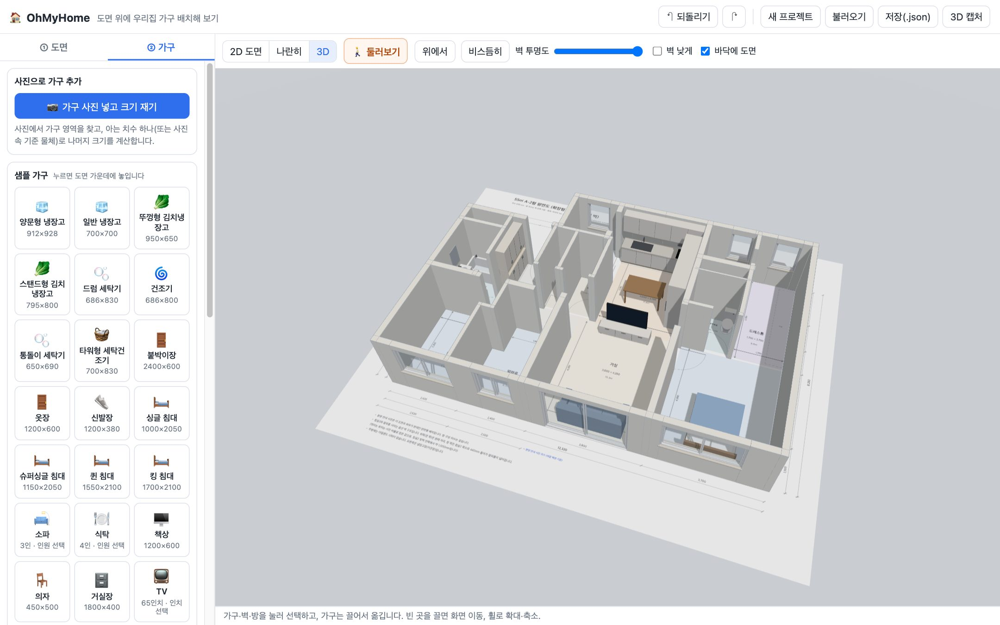
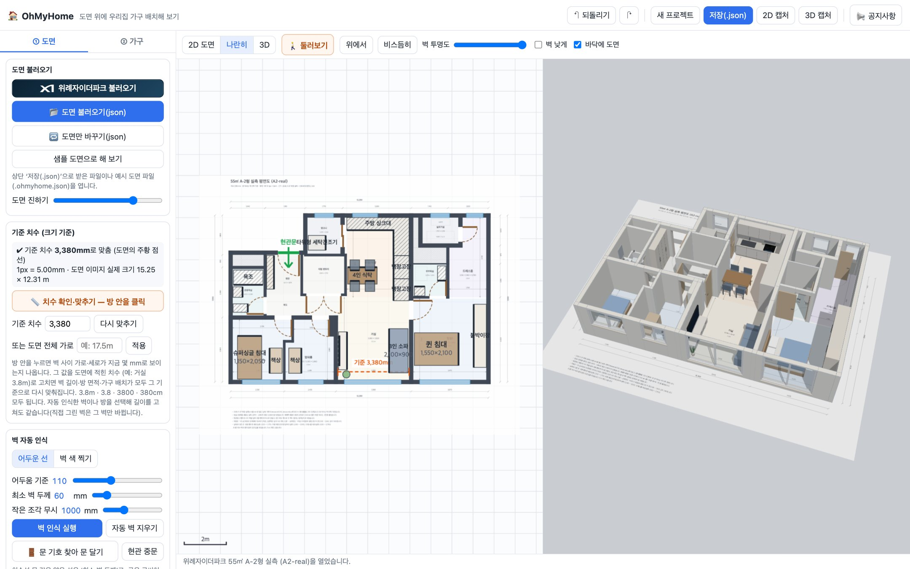
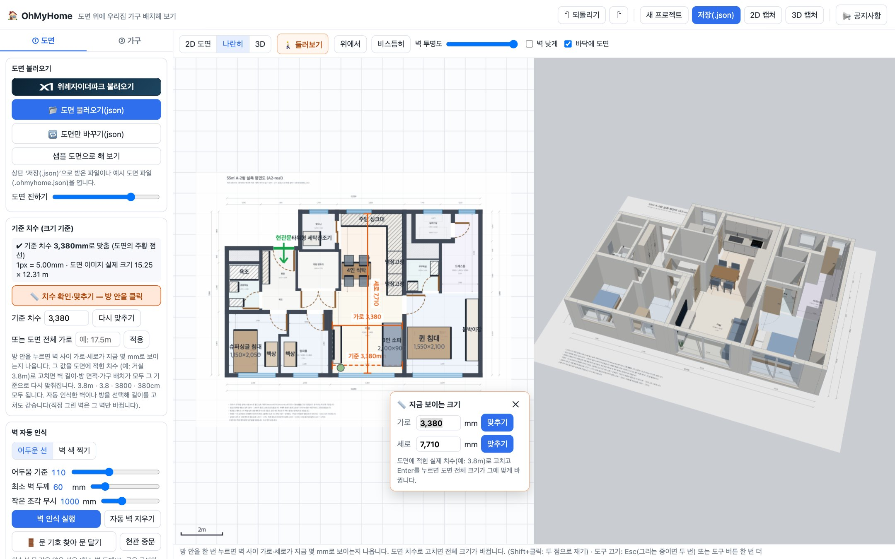
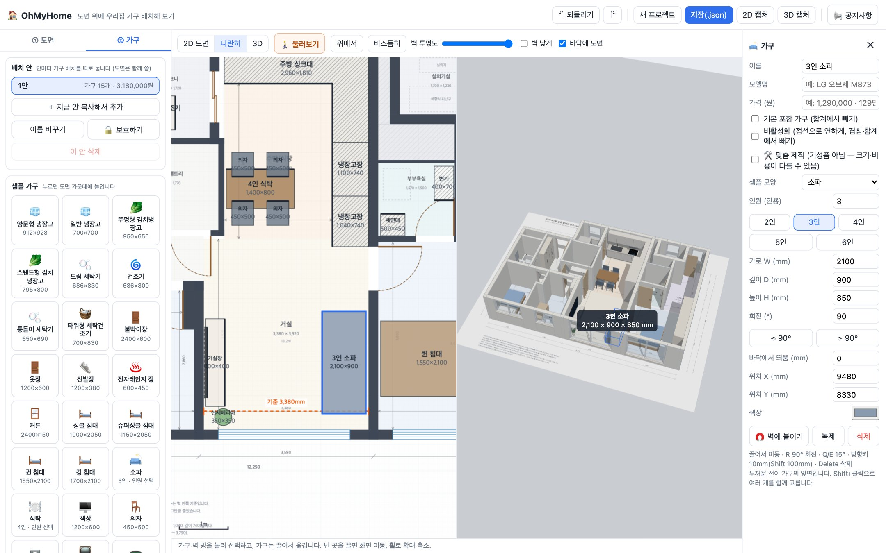
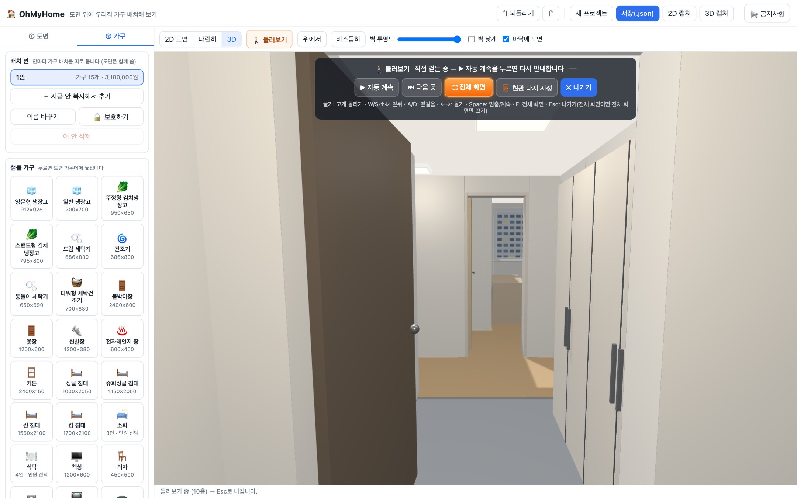
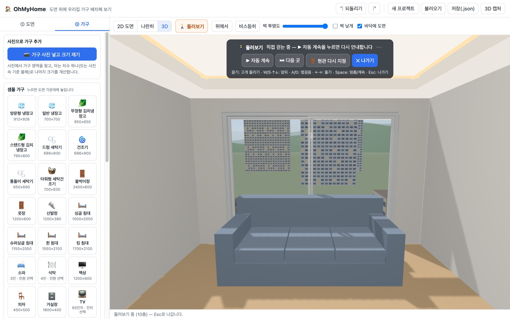

도면 이미지를 넣으면 크기를 재어 3D로 세우고, 가구를 놓아 보고, 현관부터 방까지 걸어서 둘러볼 수 있는 웹 프로그램입니다.

| 항목 | 내용 |
|---|---|
| Python 3 | 프로그램 파일을 브라우저에 보내 주는 작은 서버를 띄우는 데 씁니다. macOS에는 보통 들어 있고, Windows는 python.org에서 받아 설치할 때 “Add python.exe to PATH”를 꼭 체크하세요. |
| 웹 브라우저 | Chrome · Edge · Safari 최신 버전. |
| 인터넷 연결 | 3D 그래픽 라이브러리를 인터넷에서 받아 옵니다. 도면과 가구 정보는 밖으로 보내지 않고 내 브라우저에만 저장됩니다. |
| 파일 | 설명 |
|---|---|
run_ohmyhome.sh / run_ohmyhome.bat | 실행 파일 (macOS·Linux / Windows) |
serve.py | 실행 파일이 띄우는 서버 |
index.html, css/, js/ | 프로그램 본체 |
sample/*.ohmyhome.json | 바로 열어 볼 수 있는 예시 도면 (55㎡ A-1형 · A-2형) |
OhMyHome_Guide.pdf | 이 문서 |
zip 파일을 원하는 곳에 풀고, 아래 순서대로 실행합니다. 실행하면 브라우저가 http://localhost:8190을 자동으로 엽니다.
OhMyHome 폴더로 이동합니다.# 폴더를 터미널 창으로 끌어다 놓으면 경로가 입력됩니다
cd ~/Downloads/OhMyHome
./run_ohmyhome.sh
permission denied가 나오면 bash run_ohmyhome.sh로 실행하세요.
OhMyHome 폴더를 엽니다.run_ohmyhome.bat을 더블클릭합니다.index.html을 더블클릭해서 열면 동작하지 않습니다. 반드시 실행 파일로 띄운 주소(http://localhost:8190)로 여세요.터미널이나 까만 창에서 Ctrl + C를 누르거나 창을 닫습니다.
8190번을 다른 프로그램이 쓰고 있으면 다른 번호로 띄웁니다.
# macOS · Linux PORT=9000 ./run_ohmyhome.sh # Windows (명령 프롬프트에서) set PORT=9000 run_ohmyhome.bat
같은 와이파이의 다른 기기에서 보려면 아래처럼 띄우고, 화면에 찍힌 http://192.168.x.x:8190 주소를 그 기기 브라우저에 입력합니다.
# macOS · Linux HOST=0.0.0.0 ./run_ohmyhome.sh # Windows (명령 프롬프트에서) set HOST=0.0.0.0 run_ohmyhome.bat
“들어오는 연결 허용” 창이 뜨면 허용을 누르세요.

| 영역 | 하는 일 |
|---|---|
| 왼쪽 ① 도면 | 도면 이미지 열기, 기준 치수(축척) 맞추기, 벽 자동 인식, 벽·방·창 그리기 도구, 벽 높이·층수 |
| 왼쪽 ② 가구 | 샘플 가구 목록, 사진으로 가구 추가, 놓은 가구 목록 |
| 가운데 위 막대 | 2D 도면 나란히 3D 보기 전환, 🚶 둘러보기, 3D 시점(위에서·비스듬히), 벽 투명도, 벽 낮게 |
| 맨 위 오른쪽 | 되돌리기·다시 하기, 새 프로젝트, 불러오기, 저장(.json), 2D 캡처, 3D 캡처 |
| 오른쪽 속성 패널 | 가구·벽·방·창을 누르면 나타나 크기·위치·회전 등을 고칩니다 |
| 맨 아래 상태줄 | 지금 할 일과 결과를 알려 줍니다 |
처음이라면 들어 있는 예시 도면으로 기능을 먼저 둘러보세요. 벽·창·욕실/주방 설비·현관문까지 모두 입력되어 있습니다.
sample/55A2_plan.ohmyhome.json(또는 좌우가 반전된 55A1_plan.ohmyhome.json)을 고릅니다.왼쪽 도면 이미지 열기로 평면도 그림(PNG·JPG)을 넣습니다. PDF 도면은 화면을 캡처해서 이미지로 넣으면 됩니다. 분양 안내 사진처럼 비스듬히 찍은 사진보다는 위에서 본 평면도가 정확합니다.
그림만으로는 실제 크기를 알 수 없으므로, 도면에 적힌 치수 하나로 전체 크기를 맞춥니다.

길이는 3.8m, 3.8, 3800, 3,800, 380cm 어느 형식으로 넣어도 됩니다(단위 없이 50보다 작으면 m로 읽습니다). 나중에 왼쪽 ‘기준 치수’ 칸의 값만 고쳐 다시 맞출 수도 있습니다.
⬛ 방 영역으로 방 꼭짓점을 찍으면 면적(㎡·평)과 가로×세로가 나옵니다. 방 이름을 붙여 두면 둘러보기가 더 똑똑해집니다.
| 방 이름에 들어간 말 | 둘러보기에서 자동으로 해 주는 것 |
|---|---|
| 욕실 · 화장실 | 변기·세면대(가장 큰 욕실에는 욕조까지)를 놓습니다 |
| 주방 · 부엌 | 싱크대(개수대·인덕션·상부장·후드)를 놓습니다 |
| 거실 | 우물형 천장(간접조명). 이름이 없으면 도면 아래쪽에서 가로가 가장 넓은 공간을 거실로 봅니다 |
도면에서 벽 위에 연하게 그려진 창 자리와 바깥벽이 끊긴 곳은 자동으로 창이 됩니다. 직접 내려면 🪟 창문 도구로 벽을 누르세요. 창을 누르면 폭, 바닥에서 창 아래까지 높이, 창 높이를 고칠 수 있습니다(허리창 / 바닥까지 큰 창).
벽 인식을 하면 도면에 여닫이 문 기호(문짝 선 + 여닫는 호)가 그려진 틈마다 문이 달립니다. 나중에 다시 찾으려면 🚪 문 기호 찾아 문 달기를 누르세요. 3D에서는 문 위를 천장까지 벽으로 채우고 문짝을 도면 기호처럼 열어 둡니다. 직접 달려면 🚪 문 도구로 벽이 끊긴 틈을 누르세요(누른 쪽으로 열립니다). 문을 누르면 ⇋ 경첩 반대로 · ⇅ 여는 쪽 반대로로 고칠 수 있습니다. 문 모양은 여닫이 · 미닫이 · 중문으로 바꿉니다. 미닫이는 벽 면을 따라 밀려 열리고(⇋ 여는 방향 반대로 · ⇅ 붙는 벽 면 반대로), 폭이 1.3m를 넘으면 두 짝이 양쪽으로 열립니다. 🚪 문 도구로 새로 다는 문은 마지막에 고른 모양이 됩니다. 미닫이 문 기호는 자동으로 찾지 않습니다.
현관 중문을 누르면 현관문 안쪽, 현관과 집 안 사이의 틈에 유리 3연동 중문을 답니다. 세 짝이 한쪽으로 겹쳐 모이며 열리고, 문 위는 천장까지 고정 유리입니다. 현관 방 영역(이름 ‘현관’)을 그려 두면 그 가장자리에서 자리를 찾습니다. 현관문 자리를 먼저 정해야 합니다(🚶 둘러보기를 한 번 하면 정해집니다). 현관과 너무 가깝거나 멀면 2D에서 중문을 끌거나 속성의 현관문에서 (mm)를 고치세요. 양옆 벽을 따라 앞뒤로만 움직이고, 폭은 그 자리의 양옆 벽에 맞춰집니다.

📷 가구 사진 넣고 크기 재기에 가구 정면 사진을 넣으면 가구 영역을 자동으로 찾습니다. 아는 치수 하나(예: 가로 900mm)를 넣거나 사진 속 기준 물체에 선을 그으면 나머지 크기를 계산하고, 비슷한 샘플 모양을 골라 줍니다. 사진 한 장으로 잰 크기는 어림값이므로 제품 사양이 있으면 그 값을 넣는 것이 가장 정확합니다.
| 버튼 | 하는 일 |
|---|---|
| 2D 도면 나란히 3D | 화면 구성 전환 |
| 위에서 비스듬히 | 3D 시점을 처음 위치로 |
| 벽 투명도 | 벽을 반투명하게 해서 안쪽을 봅니다 |
| 벽 낮게 | 벽을 허리 높이(1m)로 잘라 단면도처럼 봅니다 |
| 바닥에 도면 | 3D 바닥에 도면 그림을 깔지 정합니다 |
| 2D 캡처 | 2D 도면 전체를 가로 PNG 그림(3840×2160)으로 받습니다 |
| 3D 캡처 | 집을 위에서 · 왼쪽 비스듬히 · 오른쪽 비스듬히 본 가로 PNG 그림 세 장(1920×1080)을 받습니다. 브라우저가 여러 파일 받기를 물으면 허용하세요. 둘러보기 중에는 지금 화면 한 장입니다 |
🚶 둘러보기를 누르면 현관 앞에서 문을 열고 들어가 방을 차례로 돌아봅니다. 처음 한 번은 2D 도면에서 현관문 자리(벽이 끊긴 곳)를 눌러 알려 주세요. 다시 정하려면 둘러보기 안내판의 현관 다시 지정을 누릅니다. 현관을 지나 집 안에 들어오면 문짝은 투명하게 모양(테두리 선)만 보여서 문 너머 방 안이 다 보입니다.


| 키 · 동작 | 하는 일 |
|---|---|
| 화면 끌기 | 고개 돌리기 |
| W S / ↑ ↓ | 앞뒤로 걷기 (문에 가까이 가면 문 안으로 안내됩니다) |
| A D | 옆걸음 |
| ← → | 제자리에서 돌기 |
| Space | 자동 안내 멈춤 / 계속 |
| N | 다음 곳으로 |
| Esc | 나가기 |
| 키 | 동작 |
|---|---|
| V W A M N D X | 선택 · 벽 · 방 · 길이 재기 · 창문 · 문 · 지우기 도구 |
| R / Shift+R | 선택한 가구 90° 회전 |
| Q / E | 15° 회전 |
| 방향키 (Shift) | 10mm (100mm) 이동 |
| Delete | 선택한 것 삭제 |
| Ctrl/⌘+Z · Ctrl/⌘+Shift+Z | 되돌리기 · 다시 하기 |
| Ctrl/⌘+D | 복제 |
| Shift+클릭 · 빈 곳 Shift+끌기 | 가구 여러 개 고르기 (사각형) |
| Ctrl/⌘+A | 가구 전체 선택 |
| F | 2D 도면 전체 보기 |
| Esc | 그리던 것 취소 → 그리기 도구 끄기 → 선택 해제 (켜진 도구 버튼을 다시 눌러도 꺼집니다) |
2D 화면: 휠로 확대·축소, 빈 곳을 끌거나 Space+드래그로 화면 이동.
| 증상 | 해결 |
|---|---|
| 화면이 하얗게 나오고 아무것도 안 뜸 | index.html을 직접 연 경우입니다. 실행 파일로 띄운 http://localhost:8190으로 여세요. |
| 3D 화면만 비어 있음 | 인터넷 연결을 확인하세요(3D 라이브러리를 인터넷에서 받습니다). |
실행하면 바로 꺼짐 / Address already in use | 8190번을 다른 프로그램이 쓰고 있습니다. 2장의 ‘포트 바꾸기’로 다른 번호를 쓰세요. |
Windows에서 'python'은(는) … 아닙니다 | Python이 없거나 PATH에 없습니다. python.org에서 설치하며 “Add python.exe to PATH”를 체크하세요. |
| 새 버전으로 바꿨는데 화면이 이상함 | 브라우저에서 강제 새로고침하세요: Windows Ctrl+F5, macOS ⌘+Shift+R. |
| 휴대폰에서 접속이 안 됨 | HOST=0.0.0.0으로 띄웠는지, 같은 와이파이인지, PC 방화벽에서 연결을 허용했는지 확인하세요. |
| 크기가 도면 치수와 다름 | 5장의 ‘기준 치수 맞추기’를 다시 하세요. 설명용 그림처럼 그림 비율이 실제와 다른 도면은 한 방을 맞추면 다른 방이 어긋날 수 있습니다. |
| 둘러보기가 방에 못 들어감 | 문 자리에 벽이나 창이 막혀 있는지 2D에서 확인하고 🧽 지우기로 틈을 내 주세요. |